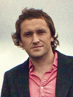
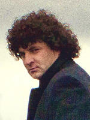
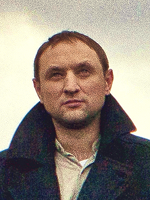
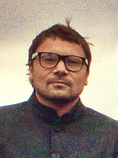

Андрей Зверев — клавишные, рояль, вокал
Карен Арутюнян — кларнет, дудук, вокал
Николай Феоктистов — электрические гитары, вокал
Дмитрий Калинин — балалайка, народные духовые инструменты
Александр Зубарев — бас-гитара
Богдан Бобров — ударные
«Они живые и душевные, позитивные и мелодичные, забыть их невозможно», — так о группе «После 11» говорят в прессе.
«После 11» образовалась в 1999 году в городе Саратов из студентов Саратовской консерватории. Группа сразу стала активно «светиться», выступать на «квартирниках» и в местных рок-клубах, на городских праздниках и разнообразных молодежных фестивалях и собраниях. После участия во всероссийском конкурсе молодых артистов эстрады «Радуга талантов» ребята переезжают в Москву, где, не сбавляя оборотов, выступают на самых известных столичных площадках, участвует и выигрывает в международных конкурсах, записываются как сессионные музыканты в различных проектах («Дети Пикассо», «Торба на круче», «Ума Турман», Coco Павлиашвили).

Юрий Постарнаков
Родился 15.04.1979 в городе Вязьма Смоленской области. Закончил Смоленское музыкальное училище по классу аккардеон. Затем Саратовскую консерваторию, отделение народного пения и фольклора. В детстве хотел стать милиционером. Любит играть в футбол, настолный теннис, волейбол. Заядлый кошатник, но из жалости к пушистым дома их не держит, не позволяет динамичный образ жизни музыканта. Громким тусовкам предпочитает небольшие компании близких людей. Не женат! Любимые инструменты гитара, рояль. Музыкальные пристрастия очень широки, от фольклора до хорошей электронной музыки, по своей сути мелодист.
Родился 15.04.1979 в городе Вязьма Смоленской области. Закончил Смоленское музыкальное училище по классу аккардеон. Затем Саратовскую консерваторию, отделение народного пения и фольклора. В детстве хотел стать милиционером. Любит играть в футбол, настолный теннис, волейбол. Заядлый кошатник, но из жалости к пушистым дома их не держит, не позволяет динамичный образ жизни музыканта. Громким тусовкам предпочитает небольшие компании близких людей. Не женат! Любимые инструменты гитара, рояль. Музыкальные пристрастия очень широки, от фольклора до хорошей электронной музыки, по своей сути мелодист.

Карен Арутюнян
Родился 27.08.80 в г. Эчьмиадзин, республики Армения. Закончил музыкальное училище по классу Кларнет. Затем учился в Саратовской Консерватории на отделении народного пения и фолклора. Детство было очень веселым. С 9 лет уже умел ездить верхом, на лошадях, причем была своя лошадь по имени Белка. Как и все мальчики, был немного непослушным и любил свободу. В юности 4 года ходил на бальные танцы, а последующие 4 занимался в секции Боевого УШУ. Любит смотреть большой тенис, бокс, футбол и бои без правил. С детства большой поклонник Леонида Быкова и Фрунзика Мкртычана. Любит веселые компании, ходить в кино и обожает петь в душе.
Родился 27.08.80 в г. Эчьмиадзин, республики Армения. Закончил музыкальное училище по классу Кларнет. Затем учился в Саратовской Консерватории на отделении народного пения и фолклора. Детство было очень веселым. С 9 лет уже умел ездить верхом, на лошадях, причем была своя лошадь по имени Белка. Как и все мальчики, был немного непослушным и любил свободу. В юности 4 года ходил на бальные танцы, а последующие 4 занимался в секции Боевого УШУ. Любит смотреть большой тенис, бокс, футбол и бои без правил. С детства большой поклонник Леонида Быкова и Фрунзика Мкртычана. Любит веселые компании, ходить в кино и обожает петь в душе.

Николай Феоктистов
Родился 1 июля 1978 года в г. Толочине (Витебская область). Учился в колледже исскуств им. М. В. Исаковского, далее в консерватории Л.В.Собинова Любит спорт, а именно футбол, хоккей, теннис, биллиард, а зимой горные лыжи и санки! Охотно путешествует! Нравятся концерты, кино и клубы, дискотеки. Из увлечений также разбирать электро-бытовую технику!
Родился 1 июля 1978 года в г. Толочине (Витебская область). Учился в колледже исскуств им. М. В. Исаковского, далее в консерватории Л.В.Собинова Любит спорт, а именно футбол, хоккей, теннис, биллиард, а зимой горные лыжи и санки! Охотно путешествует! Нравятся концерты, кино и клубы, дискотеки. Из увлечений также разбирать электро-бытовую технику!

Андрей Зверев
Родился 17 октября 1977 года в городе Саратов. Закончил музыкальную школу, Саратовское музыкальное училище, Саратовскую Государственную Консерваторию им. Собинова. В детстве хотел стать проводником на поезде и хоккеистом. Последним почти удалось, но пришлось сделать выбор в пользу музыкальной школы. В общеобразовательной школе был рассеянным и невнимательным. Поэтому выбора после окончания между профессиями особого не было. С детства увлекся традиционной культурой, являлся участником нескольких фольклорных коллективов г. Саратов.
Родился 17 октября 1977 года в городе Саратов. Закончил музыкальную школу, Саратовское музыкальное училище, Саратовскую Государственную Консерваторию им. Собинова. В детстве хотел стать проводником на поезде и хоккеистом. Последним почти удалось, но пришлось сделать выбор в пользу музыкальной школы. В общеобразовательной школе был рассеянным и невнимательным. Поэтому выбора после окончания между профессиями особого не было. С детства увлекся традиционной культурой, являлся участником нескольких фольклорных коллективов г. Саратов.